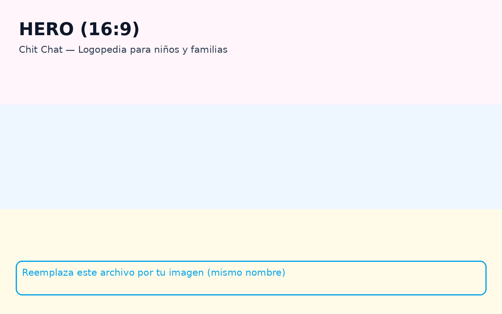
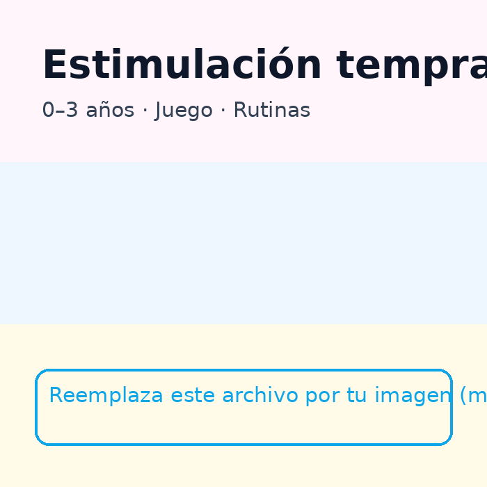
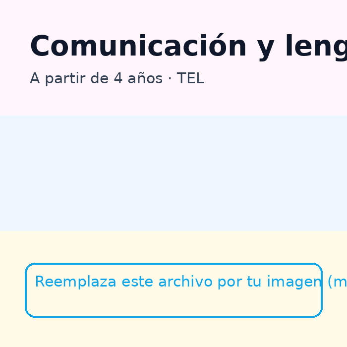
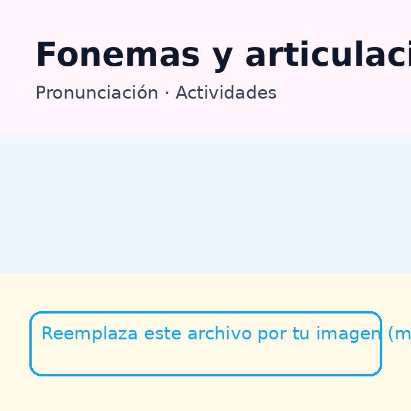
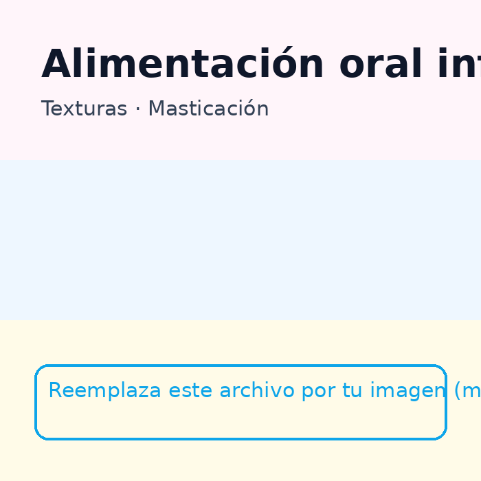
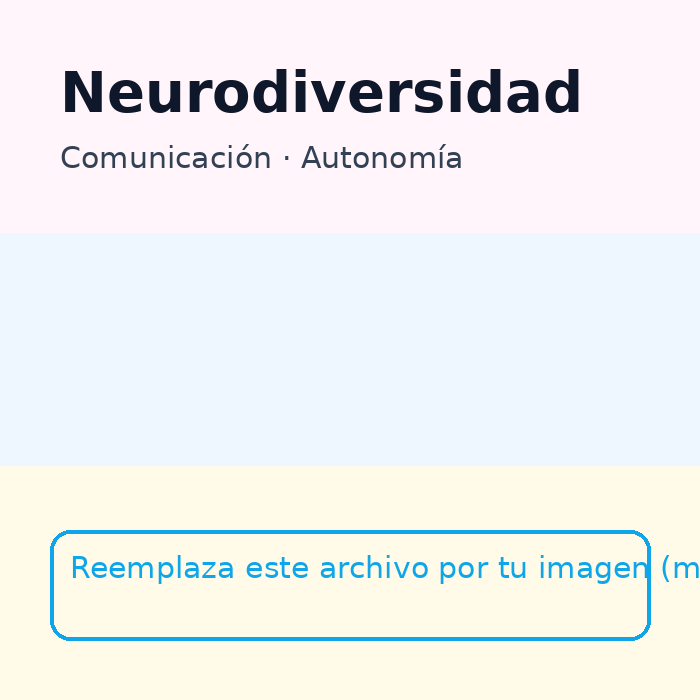
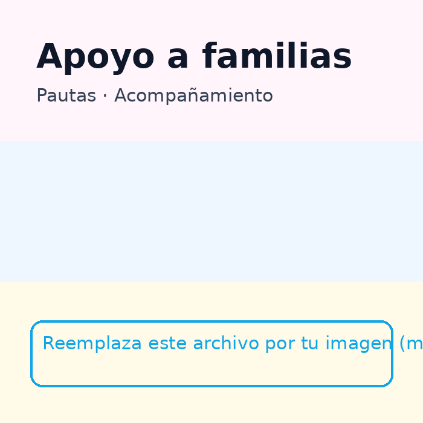

Sesiones cercanas, lúdicas y basadas en evidencia. Atención en persona y online.


Acompañamos el desarrollo comunicativo de los más pequeños desde sus primeros meses de vida, respetando su ritmo y potenciando sus capacidades.
La estimulación temprana está dirigida a bebés y niños pequeños que presentan retrasos en el desarrollo del lenguaje, la comunicación o la interacción, o que simplemente necesitan un pequeño empujón para desarrollar todo su potencial.
Trabajamos aspectos como:
Las sesiones se basan en el juego y en las rutinas diarias, y la familia participa activamente, aprendiendo cómo favorecer la comunicación en el día a día.

Intervención en dificultades del lenguaje oral y la comunicación, adaptada a cada niño y a sus necesidades.
Este servicio está pensado para niños que presentan:
Trabajamos de forma lúdica y funcional para que el niño se sienta seguro y motivado, favoreciendo una comunicación más clara y eficaz tanto en casa como en el entorno escolar.

Ayudamos a los niños a mejorar la pronunciación de los sonidos del habla de forma respetuosa y divertida.
Algunos niños tienen dificultades para pronunciar ciertos sonidos (como la /r/, /s/, /l/, /k/…), lo que puede afectar a su inteligibilidad y confianza al hablar.
La intervención se centra en:
Siempre a través de juegos y actividades motivadoras, evitando ejercicios repetitivos o forzados.

Acompañamiento en dificultades relacionadas con la alimentación, la masticación y la aceptación de alimentos.
Trabajamos con niños que presentan:
El enfoque es respetuoso, gradual y centrado en el bienestar del niño, sin forzar ni generar experiencias negativas con la comida. La familia recibe pautas claras para aplicar en casa y avanzar de forma segura.

Apoyo a niños con perfiles diversos de neurodesarrollo, respetando su forma única de comunicarse y relacionarse.
Acompaño a niños dentro del espectro del autismo y otras neurodiversidades, adaptando la intervención a sus fortalezas, intereses y estilo comunicativo.
Trabajamos:
El objetivo no es “normalizar”, sino potenciar la comunicación y el bienestar del niño, creando un entorno seguro y comprensivo.

Las familias son una parte fundamental del proceso terapéutico.
Ofrezco orientación a madres, padres y cuidadores para que se sientan seguros y acompañados en el desarrollo de su hijo.
Incluye:
Creo firmemente que cuando la familia entiende y participa, los avances son más significativos y duraderos.
Acompaño a niños y a sus familias en el desarrollo del habla, el lenguaje y la comunicación, desde un enfoque cercano, respetuoso y basado en la evidencia científica. Mi objetivo es crear un espacio seguro y de confianza donde cada niño pueda expresarse, aprender y crecer a su propio ritmo.
Hola, soy NOMBRE, logopeda especializada en infancia, lenguaje y neurodesarrollo. Trabajo principalmente con niños desde los primeros años de vida hasta la etapa escolar, acompañándolos en dificultades del habla, el lenguaje, la comunicación y la alimentación.
Me gradué como logopeda en Irlanda y soy bilingüe, lo que me permite trabajar con una mirada sensible hacia el desarrollo del lenguaje en contextos bilingües. Actualmente acompaño a familias en Zaragoza, ofreciendo un espacio profesional, cálido y adaptado a cada niño.
Intervención respetuosa, basada en la evidencia y centrada en el niño y su familia.
Mi forma de trabajar se basa en la evidencia científica, el respeto al ritmo del niño y la colaboración activa con las familias. Cada intervención es individualizada y se adapta a las necesidades, intereses y características de cada niño.
Estoy formada en los programas Hanen – It Takes Two to Talk y More Than Words, que ponen a la familia en el centro del proceso. Además, cuento con un posgrado en disfagia, lo que me permite abordar con seguridad y sensibilidad las dificultades relacionadas con la alimentación oral infantil.
Las sesiones son dinámicas y lúdicas, utilizando el juego como principal herramienta de aprendizaje. Acompaño a las familias con pautas claras y realistas para favorecer avances significativos y sostenibles.
Mi objetivo es que cada niño se sienta comprendido, capaz y seguro, y que las familias se sientan acompañadas y confiadas durante todo el proceso.
¿A partir de qué edad atendéis?
Desde bebés (0–3) con orientación familiar, hasta adolescentes.
¿Hacéis sesiones online?
Sí, según el caso. También ofrecemos material para casa.
¿Cómo empiezo?
Reserva una evaluación inicial y te diseñamos un plan.
Reserva una evaluación inicial y te propondré un plan adaptado a tu familia.